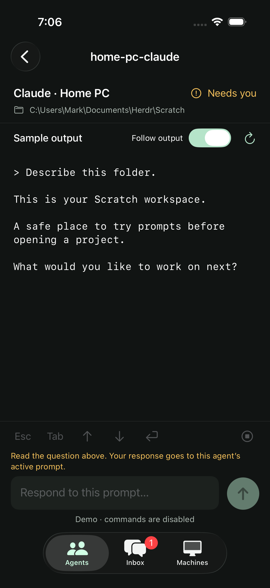
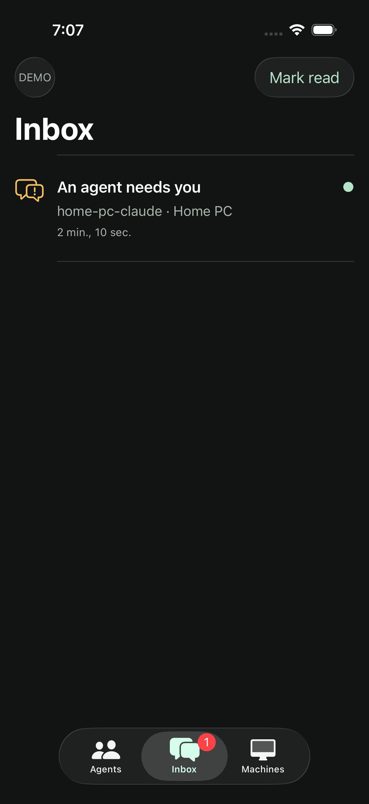
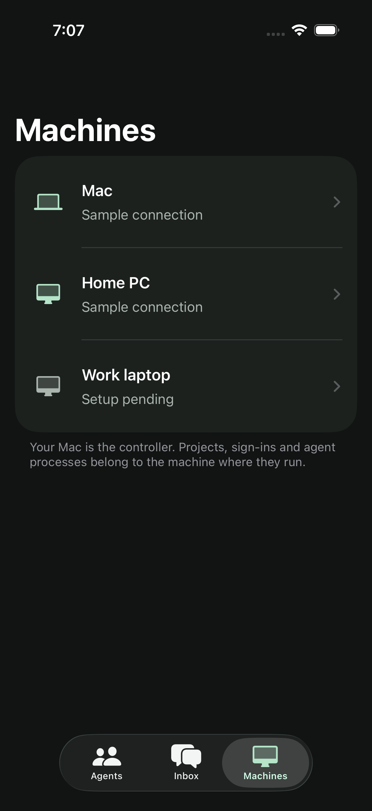
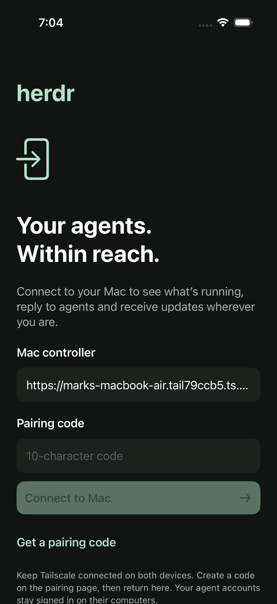
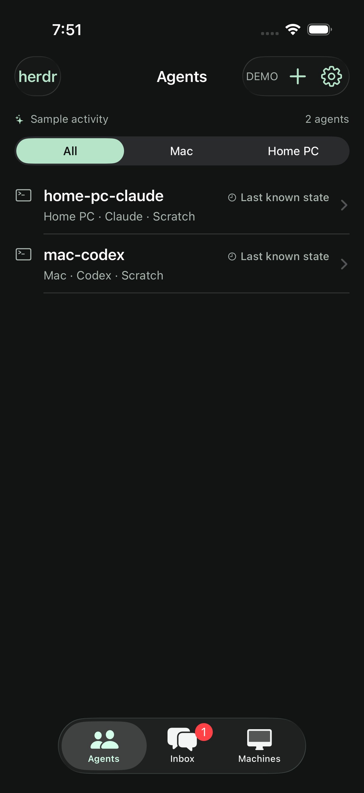

herdr
Your agents.
One simple list.
A compact agent list with small icons, inline status and one-tap access to each session. These are actual simulator captures with clearly marked sample activity. Open a screen to view it at full size.
Compact list · Build 0.1.0 (2) ready in TestFlight
Your agents
Eight sample agents in a compact list, with names and status easy to scan.

Read and respond
Terminal output, message composer and explicit key controls.

Activity inbox
Replies needed, finished tasks and connection changes.

Your machines
Execution locations, workspaces and the pending work laptop.

Connect your iPhone
Private pairing with your Mac over Tailscale.

When a connection drops
Last-known states stay clearly marked.
